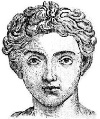

Esprili, satirik ve yer yer müstehcen olan Catullus (MÖ 84-54), bir Antik Roma şairidir. Çalışmalarının Rönesans’ta yeniden keşfi ile Batı kültürü üzerinde önemli bir etkisi olmuştur. Aşk şiirleri, güzelliklerinin yanı sıra taşıdıkları mizah ve erotizm ile de büyük bir ün kazanmıştır.

Gaius Valerius Catullus Roma’nın kuzeyindeki bir şehir olan Verona’da doğdu. Elit bir aileye mensuptu. Babası, Julius Sezar’ın (MÖ 100-44) yakın bir dostuydu. Catullus, Bithynia’da Roma ordusuna hizmet etti. Ne var ki bir yıllık askerliğin ardından ordudan ayrıldı. Böylece politikada kariyer yapma umudunu da bir kenara bırakmış oldu.
Catullus’un hayatına dair pek çok ayrıntı bilinmemektedir. Onunla ilgili en önemli kaynak ise yine kendi şiirleridir. Orduya katılmadan önce Roma’da yaşamış ve yaşlı bir kadına, Clodia Metelli’ye aşık olmuştur. Bu kısa süreli ilişkisi pek çok aşk şiirine ilham vermiştir. Ordudayken kardeşinin Truva yakınlarındaki mezarını ziyaret etmiş ve bu ziyaret ona bir ağıt yazması için ilham vermiştir, “Daima, Kardeşim, sana selam ve elveda olsun.”
Bir dönem, şiirlerinden birinde alay ettiği Sezar’ın öfkesine maruz kalmıştır. Sezar, arkadaşının oğlunu affetmiş ve söylendiğine göre barışmalarını kutlamak için birlikte bir akşam yemeği yemişlerdir. Catullus ordudan ayrıldıktan sonra İtalya’ya dönmüş ve Tivoli yakınlarındaki bir villaya yerleşmiştir. Otuz yaşındayken bilinmeyen bir nedenle burada ölmüştür.
Roma edebiyatında, Catullus neoterik şairlerden biri olarak sınıflandırılmaktadır. Bu akım, şiirde günlük dili kullanarak Latin şiirinde çığır açmış ve genellikle sıradan konular üzerine yazmıştır. Catullus’un eserleri, Cicero (MÖ 106-43) gibi şiirin moral verici olması gerektiğini düşünen gelenekselciler tarafından eleştirilmiştir.
Catullus’un şiirleri Orta Çağ’da kaybolmuştur. Sonraları ise Verona’da çalışmalarının bir kopyasına ulaşılmıştır. Günümüzde önemli Latin yazarlarından biri olarak kabul edilmektedir. John Milton (1608-1674) ve William Worthswort (1770-1850) gibi modern şairler üzerinde etkili olmuştur.
Ek Bilgiler
1- Catullus, kendisi gibi aşk şiirleri yazan Midillili Sappho’ya (MÖ 630-570) hayrandı. Bu nedenle sevgilisi Clodia’ya Lesbia lakabını takmıştır.
2- Lesbia’ya yazdığı aşk şiirlerinden birinde onu defalarca öpmek istediğini belirtir. “Cyrene Silphium sahillerindeki kumlar kadar.” Arkeoloji dergisinde 1994 yılına yayınlanan bir makalede bu satırların ilkel bir doğum kontrol yöntemine yapılan bir gönderme olduğu iddia edilmiştir. Söz konusu doğum kontrol yönteminde günümüzde soyu tükenmiş olan Silphium bitkisinden yararlanılmaktadır.
3- Catullus’un şiirleri başlıksızdır ve genellikle numaralandırılarak tasnif edilmişlerdir: “Catullus 50” ya da “Catullus 101” gibi.